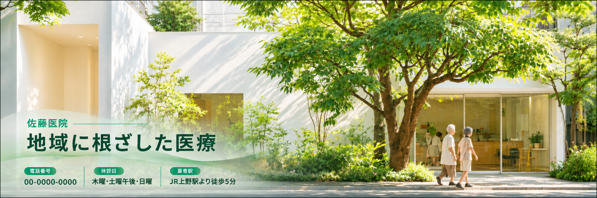
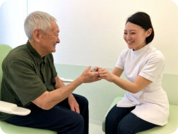
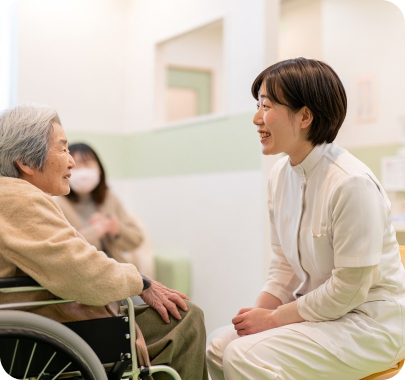

院長：佐藤 太郎
経歴：光明大学医学部卒業後、瑞穂中央総合病院で内科医として10年間勤務。その後、地域医療への貢献を目指し、佐藤医院を開院。
専門分野：生活習慣病、呼吸器疾患、内科全般
コメント：患者様にとって気軽に相談できる「かかりつけ医」を目指しています。どんな小さな不安でも、まずはご相談ください。
当サイトは制作課題用の架空の医院です。
掲載している住所・電話番号・人物はすべて架空のものです。

佐藤医院Sato Clinic
Care rooted in our community
HOURS
| 時間帯 | 月 | 火 | 水 | 木 | 金 | 土 | 日 |
|---|---|---|---|---|---|---|---|
| 午前9:00〜12:00 | 診療 | 診療 | 診療 | 休診 | 診療 | 診療 | 休診 |
| 午後13:00〜18:00 | 診療 | 診療 | 診療 | 休診 | 診療 | 休診 | 休診 |
●＝診療 ／＝休診
※祝祭日も診療を行っておりますが、休診日もございますので、事前にご確認ください。
診療時間・所在地の詳細へMEDICAL
当院では、地域の皆様の健康を支えるため、幅広い内科診療を行っております。日常的な体調管理から、各種の検査や治療に至るまで、どんなお悩みもお気軽にご相談ください。
診療内容の詳細へ風邪や発熱、喉の痛み、頭痛、腹痛などの症状を中心に、一般的な体調不良の診療を行っています。また、原因不明の不調や軽い症状であっても、早期診断に努めております。
高血圧症、糖尿病、脂質異常症（高コレステロール血症）、メタボリック症候群など、生活習慣病の診断と治療を行います。病気の進行を予防し、健康維持のための生活指導や薬物療法を行います。
胃痛、胃もたれ、胸やけ、便秘、下痢などの消化器系の不調に対応しています。必要に応じて胃カメラや超音波検査などを実施し、胃腸の健康をサポートします。

咳、息切れ、胸の痛みなど、呼吸器系の症状について診療を行っています。季節性の喘息やアレルギー性鼻炎、慢性閉塞性肺疾患（COPD）などにも対応し、適切な治療と予防をサポートします。
ABOUT
佐藤医院は、地域の皆様の健康を守り、より良い生活をサポートすることを使命としています。創立以来、私たちは「患者様一人ひとりに寄り添った診療」を大切にし、地域密着型の医療を提供してまいりました。今後も、皆様の健康維持と病気予防に貢献するため、より良い医療サービスを提供し続けることをお約束いたします。
当院についての詳細へSTAFF
地域の皆様に安心してご来院いただけるよう、スタッフ一同、誠心誠意対応いたします。それぞれの専門性と温かさを活かし、皆様の健康を支えるパートナーとしてお力になれるよう努めてまいります。
スタッフ紹介の詳細へ経歴：光明大学医学部卒業後、瑞穂中央総合病院で内科医として10年間勤務。その後、地域医療への貢献を目指し、佐藤医院を開院。
専門分野：生活習慣病、呼吸器疾患、内科全般
コメント：患者様にとって気軽に相談できる「かかりつけ医」を目指しています。どんな小さな不安でも、まずはご相談ください。
看護師長：
経歴：白桜大学看護学部卒業後、緑が丘大学病院で10年勤務。地域医療に携わりたい思いから、佐藤医院に入職。
得意分野：親身な対応、注射・採血技術、健康管理指導
メッセージ：安心して治療を受けていただけるよう、いつも笑顔でお待ちしています。些細なことでもお気軽にご相談ください。
臨床検査技師：
経歴：東都臨床検査技術専門学校を卒業後、武蔵中央医療センターにて15年間の臨床検査技師としての経験を積む。
得意分野：血液検査、心電図検査、超音波検査
コメント：検査は不安が伴うこともありますが、できるだけリラックスしていただけるよう、優しく丁寧な対応を心がけています。
医療事務：
経歴：希望医療カレッジ卒業後、さくら診療所にて受付業務を担当。現在は佐藤医院で患者様対応を担当。
得意分野：受付業務、カルテ管理、医療費計算
コメント：皆様に気持ちよくご利用いただけるよう、笑顔と真心を大切にしております。初めての方もどうぞ安心してお越しください。
FAQ

ACCESS
FAX：00-0000-0000
〒123-4567 東京都台東区上野0-0-0
最寄駅：JR上野駅より徒歩5分
当院専用の無料駐車場 10台分あり